4. Data Distributions
Getting Familiar with Data Handling in R
Smit, A. J. ![]()

NoteIn This Chapter
- The concept of data distributions
ImportantTasks to Complete in This Chapter
- None
ImportantSoftware Used in This Chapter
- All distribution generation and visualisations functions in this chapter are done using
library(TidyDensity)andlibrary(tidyverse).
1 Introduction
A good grasp of data distributions is a prerequisite of any statistical analysis. It enables us to describe and summarise the underlying patterns, trends, and variations in our data. This allows for more robust predictions, inferences about natural processes such as outcomes of experiments or the structure of biodiversity. Conclusions stemming from our application of inferential statistics are defensible only if we understand and can justify the distribution of our data. In this chapter we will learn about the most common data distributions encountered in ecological research, and how this knowledge will help us to effectively apply statistical methods to analyse, interpret them.
2 What Are Data Distributions?
Data distributions are fundamental views through which we understand how values disperse across datasets. They are a mathematical underpinning that transforms our basic numerical observations (which we obtain as samples taken at random to represent a population) into interpretable patterns of frequency, probability, and structural regularity. Distributions show us the underlying “shape” of variation itself, reveal how values are clustered symmetrically (or not) around a central tendency and are skewed toward the extremes, or exhibit multiple peaks that could suggest distinct groupings within the broader dataset.
We need to understand distributions because any collection of measurements (e.g. heights of individuals, rates of nutrient uptake, or counts of animals moving past a point) exhibits characteristic shapes when we plot their frequency against their value. These shapes may be normal, exponential, uniform, bimodal, etc., and are specific to the processes that generated the data. As such, distributions are a statistical link between the empirical observations, our claims about the underlying mechanisms. Our understanding of the data distribution and the process under scrutiny will therefore inform us of the statistical approaches most suited to extracting meaningful inference from them.
3 Discrete Distributions
Discrete distributions form one of two fundamental branches in probability theory; the other is continuous distributions. This division rests on the nature of the sample space: discrete distributions assign probabilities to countable outcomes (integers, finite sets), while continuous distributions apply to uncountable intervals where individual point probabilities equal zero.
Discrete random variables have a finite or countable number of possible values and are the foundation of discrete probability distributions. Two core mathematical constraints govern mapping these probability distributions to their discrete random values:
- First, each probability value must fall within the closed interval [0, 1]; no outcome can possess negative probability, exceed certainty.
- Second, the sum of all probabilities across the complete sample space must equal exactly 1.0; this ensures that the distribution accounts for all possible outcomes without omission, duplication.
In practice, these constraints give us access to practical verification steps:
- When constructing or validating a discrete distribution, sum all probability values to confirm they equal unity (1).
- Inspect each individual probability to ensure none violates the boundary conditions ([0,1]).
Violations point to computational errors or incomplete specification of the sample space.
The expected value \(E(X)\) of a discrete random variable \(X\) represents the probability-weighted average of all possible outcomes: \(E(X) = \sum[x \cdot P(X=x)]\). Let us use a standard, unbiased die as an example. For each possible value \(x\), multiply that value by its probability, then sum across all possibilities. If \(X\) can take values \(\{1,2,3,4,5,6\}\) each with probability \(1/6\), then:
\[E(X) = 1(1/6) + 2(1/6) + 3(1/6) + 4(1/6) + 5(1/6) + 6(1/6) = 3.5\]
Variance calculation follows a two-step process. First, compute the expected value of the squared outcomes:
\[E(X^2) = \sum[x^2 \cdot P(X=x)]\]
Then apply the computational formula:
\[\text{Var}(X) = E(X^2) - [E(X)]^2\]
For the die example: \(E(X^2) = 1^2(1/6) + 2^2(1/6) + ... + 6^2(1/6) = 91/6 \approx 15.17\), so \(\text{Var}(X) = 15.17 - (3.5)^2 = 15.17 - 12.25 = 2.92\).
Below I provide options to generate and visualise data belonging to several classes of discrete distributions. In Chapter 6 we will learn how to transform these data prior to performing the appropriate statistical analysis.
3.1 Bernoulli and Binomial Distributions
The Bernoulli and Binomial distributions belong to what might be termed the “trial-based” subfamily of discrete distributions: they directly model outcomes of repeated experiments. Trial-based distributions require specifying both the number of trials and success probability.
Bernoulli and Binomial distributions are both discrete probability distributions that describe the outcomes of binary events. They are similar but there are also some key differences between the two. In real life examples encountered in ecology and biology we will probably mostly encounter the Binomial distributions. Let us consider each is more detail.
Bernoulli distribution The Bernoulli distribution represents a single binary trial or experiment with only two possible outcomes: ‘success’ (usually represented as 1) and ‘failure’ (usually represented as 0). The probability of success is denoted by \(p\), while the probability of failure is \(1 - p\). A Bernoulli distribution is characterised by only one parameter, \(p\), which represents the probability of success for the single trial (Equation 1) (Figure 1, Figure 2).
The Bernoulli distribution: \[ P(X=k) = \begin{cases} p, & \text{if } k=1 \\ 1-p, & \text{if } k=0 \end{cases} \tag{1}\]
where \(X\) is a random variable, \(k\) is the outcome (1 for success and 0 for failure),\(p\) is the probability of success.
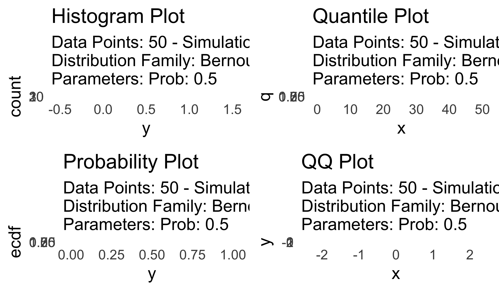
Binomial distribution The Binomial distribution represents the sum of outcomes in a fixed number of independent Bernoulli trials with the same probability of success, \(p\). It is characterised by two parameters, \(n\) (the number of trials)\(p\) (the probability of success in each trial). The Binomial distribution describes the probability of obtaining a specific number of successes (\(k\)) in \(n\) trials (Equation 2) (Figure 3).
The Binomial distribution: \[P(X=k) = C(n,k) \cdot p^k \cdot (1-p)^{(n-k)} \tag{2}\]
where \(X\) is a random variable, \(k\) is the number of successes, \(n\) is the total number of trials, \(p\) is the probability of success in each trial,\(C(n,k)\) represents combinations.
In practice, determine \(n\) (number of trials), \(p\) (success probability),\(k\) (desired number of successes). Calculate the binomial coefficient \(C(n,k) = \frac{n!}{k!(n-k)!}\), then apply Equation 2. If flipping a coin 10 times (\(n=10\), \(p=0.5\)) and seeking exactly 3 heads (\(k=3\)): \(C(10,3) = 120\), so \(P(X=3) = 120 \cdot (0.5)^3 \cdot (0.5)^7 = 120 \cdot (0.5)^{10} = 0.117\).
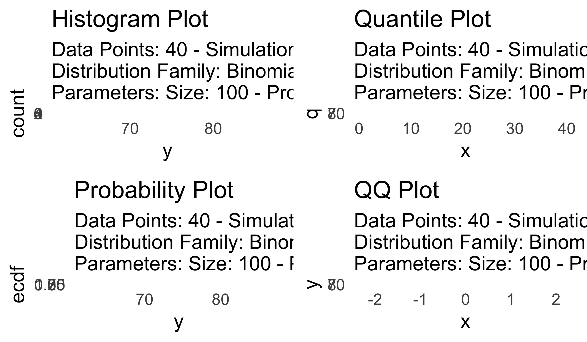
There are several examples of Binomial distributions in ecological and biological contexts. The Binomial distribution is relevant when studying the number of successes in a fixed number of independent trials, each with the same probability of success. A few examples of the Bernoulli distribution:
Seed germination Suppose we plant 100 seeds of a particular plant species and wants to know the probability of a certain number of seeds germinating. If the probability of germination for each seed is constant then we can model the number of germinated seeds by a Binomial distribution.
Disease prevalence An epidemiologist studies the prevalence of a disease within a population. For a random sample of 500 individuals, and with a fixed probability of an individual having the disease, the number of infected individuals in the sample can be modelled using a Binomial distribution.
Species occupancy We do an ecological assessment to determine the occupancy of bird species across 50 habitat patches. If the probability of the species occupying a patch is the same across all patches, the number of patches occupied by the species will follow a Binomial distribution.
Allele inheritance We want to examine the inheritance of a specific trait following Mendelian inheritance patterns. If the probability of inheriting the dominant allele for a given gene is constant, the number of offspring with the dominant trait in a fixed number of offspring follows the Binomial distribution.
Note that in these examples we assume a fixed probability and independence between trials and this is not always be true in real-world situations.
3.2 Negative Binomial and Geometric Distributions
The Geometric and Negative Binomial distributions form a “waiting time” subfamily, focusing on the number of trials preceding specified success patterns. These waiting-time distributions focus on success probability, target achievement levels.
Negative Binomial distribution A Negative Binomial random variable, \(X\), counts the number of successes in a sequence of independent Bernoulli trials with probability \(p\) before \(r\) failures occur. This distribution could for example be used to predict the number of heads that result from a series of coin tosses before three tails are observed (Equation 3) (Figure 4).
The Negative Binomial distribution: \[P(X=k) = \binom{k+r-1}{k} p^r (1-p)^k \tag{3}\]
The equation describes the probability mass function (PMF) of a Negative Binomial distribution, where \(X\) is a random variable, \(k\) is the number of failures, \(r\) is the number of successes,\(p\) is the probability of success in each trial. The binomial coefficient is denoted by \(\binom{k+r-1}{k}\), which calculates the number of ways to arrange \(k\) failures\(r\) successes such that the last trial is a success.
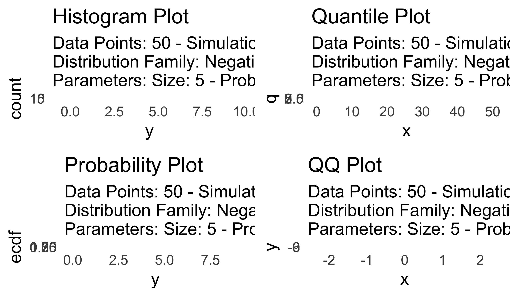
Geometric distribution A geometric random variable, \(X\), represents the number of trials that are required to observe a single success. Each trial is independent and has success probability \(p\). As an example, the geometric distribution is useful to model the number of times a die must be tossed in order for a six to be observed (Equation 4) (Figure 5).
The Geometric distribution: \[P(X=k) = p (1-p)^k \tag{4}\]
The equation represents the PMF of a Geometric distribution, where \(X\) is a random variable, \(k\) is the number of failures before the first success,\(p\) is the probability of success in each trial. The Geometric distribution can be thought of as a special case of the Negative Binomial distribution with \(r = 1\), which models the number of failures before achieving a single success.
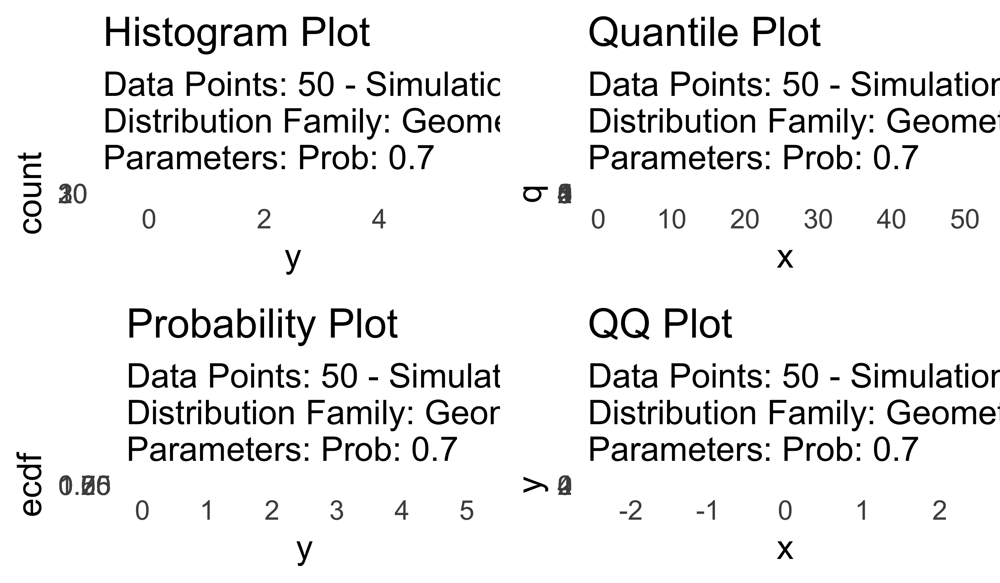
3.3 Poisson Distribution
The Poisson distribution: \[P(X=k) = \frac{e^{-\lambda} \lambda^k}{k!} \tag{5}\]
The function represents the PMF of a Poisson distribution, where \(X\) is a random variable, \(k\) is the number of events or occurrences,\(\lambda\) (lambda) is the average rate of occurrences (events per unit of time or space). The constant \(e\) is the base of the natural logarithm,\(k!\) is the factorial of \(k\). The Poisson distribution is commonly used to model the number of events occurring within a fixed interval of time or space when events occur independently and at a constant average rate.
For practical application, identify \(\lambda\) (average rate)\(k\) (observed count). If a gerbil enters a nest 4 times per hour (\(\lambda=4\)) and you want the probability of exactly 2 entries in one hour (\(k=2\)): \(P(X=2) = \frac{4^2 \cdot e^{-4}}{2!} = \frac{16 \cdot 0.0183}{2} = 0.147\).
The Poisson distribution represents a “rate-based” subfamily, which is used to model count phenomena without explicit trial structure. They involve the average occurrence rates over specified intervals.
A Poisson random variable, \(X\), tallies the number of events occurring in a fixed interval of time or space, given that these events occur with an average rate \(\lambda\). Poisson distributions can be used to model events such as meteor showers or number of people entering a shopping mall (Equation 5) (Figure 6).
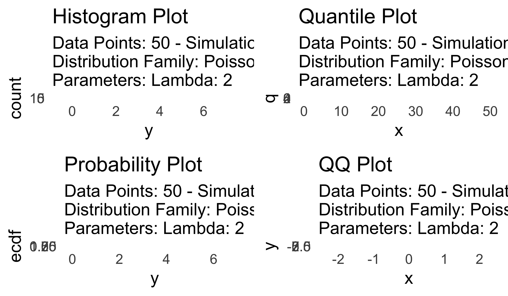
3.4 Hypergeometric Distribution
The Hypergeometricd distribution: \[P(X=k) = \frac{C(K,k) \cdot C(N-K,n-k)}{C(N,n)} \tag{6}\] In the probability mass function, above, \(N\) is population size, \(K\) is number of success items in population, \(n\) is sample size,\(k\) is observed successes in sample.
Consider drawing 5 cards from a deck without replacement, seeking exactly 2 hearts. Here \(N=52\), \(K=13\) (hearts), \(n=5\), \(k=2\): \(P(X=2) = \frac{C(13,2) \cdot C(39,3)}{C(52,5)} = \frac{78 \cdot 9139}{2,598,960} = 0.274\).
The hypergeometric distribution occupies a distinct position within the discrete distribution taxonomy: we might term the “finite population sampling” subfamily.
The hypergeometric distribution models sampling without replacement from finite populations containing two types of items. Unlike binomial sampling, each draw changes the composition of remaining items.
To do: insert figures.
4 Continuous Distributions
4.1 Normal Distribution
The Normal distribution: \[f(x) = \frac{1}{\sigma\sqrt{2\pi}} e^{ -\frac{1}{2} \left(\frac{x-\mu}{\sigma}\right)^2 } \tag{7}\]
where \(x\) is a continuous random variable, \(\mu\) (mu) is the mean,\(\sigma\) (sigma) is the standard deviation. The constant factor \(\frac{1}{\sigma\sqrt{2\pi}}\) ensures that the Probability Density Function (PDF) integrates to 1, and the exponential term is responsible for the characteristic bell-shaped curve of the Normal distribution.

Another name for this kind of distribution is a Gaussian distribution. A random sample with a Gaussian distribution is normally distributed. These values are independent and identically distributed random variables (i.i.d.), and they have an expected mean given by \(\mu\) (or \(\hat{x}\) in Chapter 3.2.1) and a finite variance given by \(\sigma^{2}\) (or \(S^{2}\) in Chapter 3.3.1); if the number of samples drawn from a population is sufficiently large, the estimated mean, SD will be indistinguishable from the population (as per the central limit theorem). It is represented by Equation 7 (Figure 8).
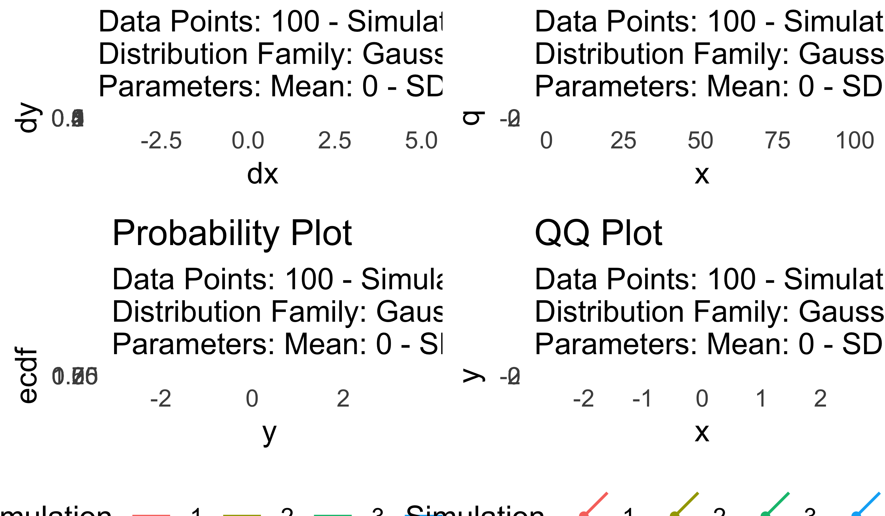
NoteCentral Limit Theorem
The Central Limit Theorem (CLT) is a fundamental result in probability theory and statistics, which states that the distribution of the sum (or average) of a large number of independent, identically distributed (IID) random variables approaches a Normal distribution regardless of the shape of the original distribution. So, the CLT asserts that the Normal distribution is the limiting distribution for the sum, average of many random variables or as long as certain conditions are met.
The CLT provides a basis for making inferences about population parameters using sample statistics. For example, when dealing with large sample sizes, the sampling distribution of the sample mean is approximately normally distributed, even if the underlying population distribution is not normal. This allows us to apply inferential techniques based on the Normal distribution, such as hypothesis testing, constructing confidence intervals and to estimate population parameters using sample data.
Some conditions must be met for the CLT to be true:
- The random variables must be independent The observations should not be influenced by one another.
- The random variables must be identically distributed They must come from the same population with the same mean and variance.
- The number of random variables (sample size) must be sufficiently large Although there is no strict rule for the sample size, a common rule of thumb is that the sample size should be at least 30 for the CLT to be a reasonable approximation.
4.2 Uniform Distribution
The continuous uniform distribution is sometime called a rectangular distribution. Simply, it states that all measurements of the same magnitude included with this distribution are equally probable. This is basically random numbers (Figure 9).
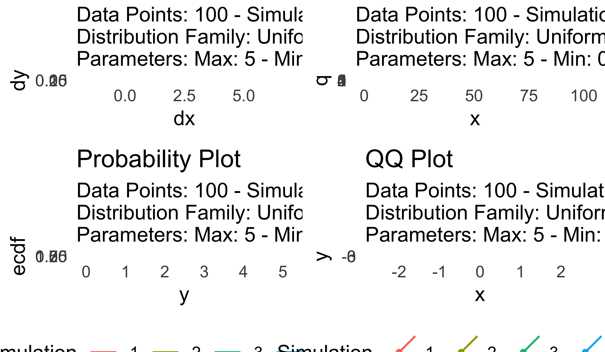
4.3 Student T Distribution
This is a continuous probability distribution that arises when estimating the mean of a normally distributed population in situations where the sample size is small and population standard deviation is unknown. It is used in the statistical significance testing between the means of different sets of samples, and not much so in the modelling of many kinds of experiments, observations (Figure 10).
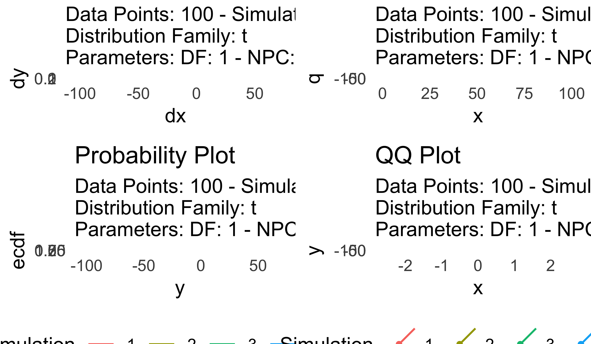
4.4 Chi-squared Distribution
Mostly used in hypothesis testing, but not to encapsulate the distribution of data drawn to represent natural phenomena (Figure 11).
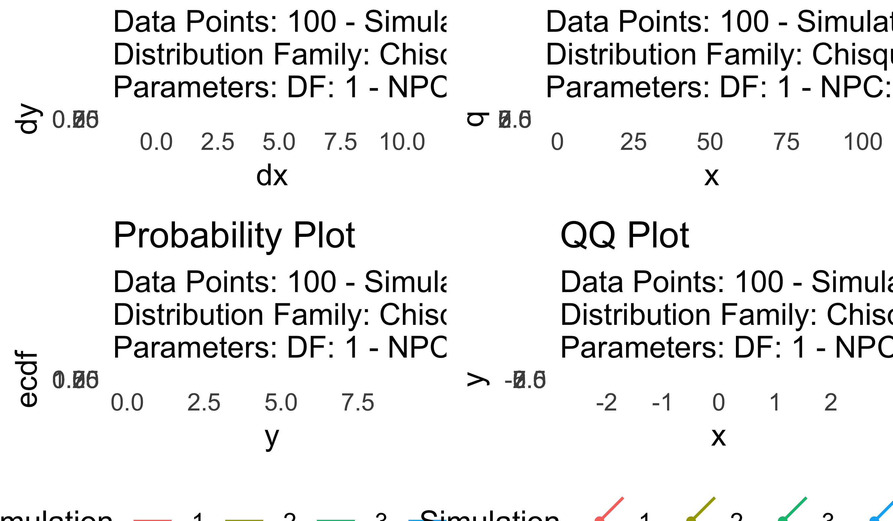
4.5 Exponential Distribution
This is a probability distribution that describes the time between events in a Poisson point process, i.e., a process in which events occur continuously, independently at a constant average rate (Figure 12).
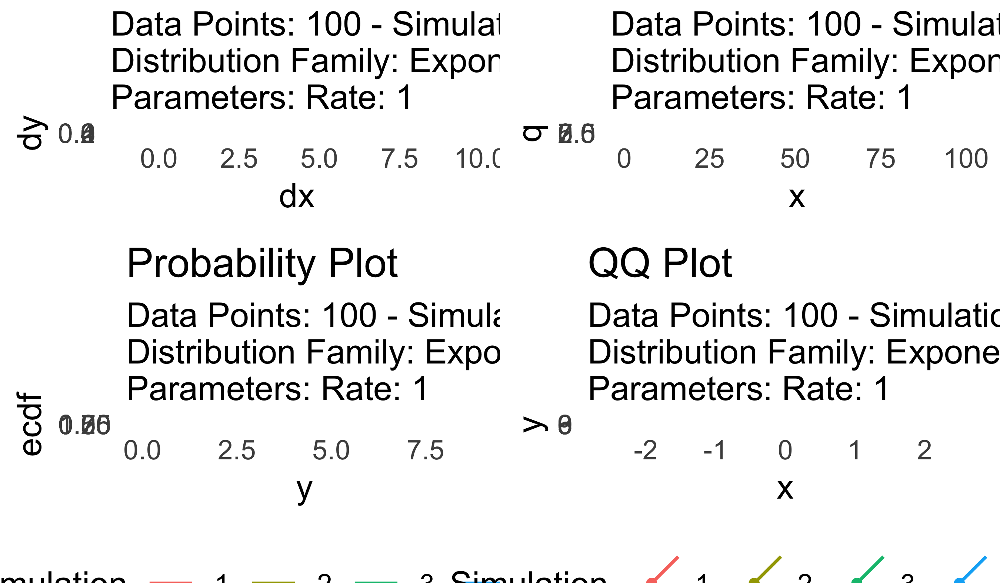
4.6 F Distribution
This is a probability distribution that arises in the context of the analysis of variance (ANOVA) and regression analysis. It is used to compare the variances of two populations (Figure 13).
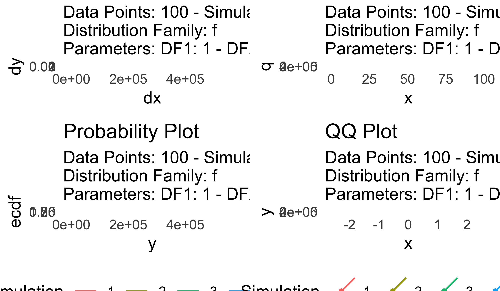
4.7 Gamma Distribution
This is a two-parameter family of continuous probability distributions. It is used to model the time until an event occurs. It is a generalisation of the exponential distribution (Figure 14).
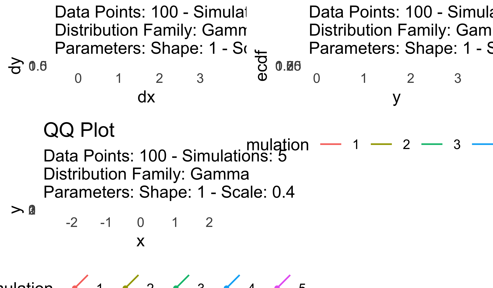
4.8 Beta Distribution
This is a family of continuous probability distributions defined on the interval [0, 1] parameterised by two positive shape parameters, typically denoted by α, β. It is used to model the behaviour of random variables limited to intervals of finite length in a wide variety of disciplines (Figure 15).
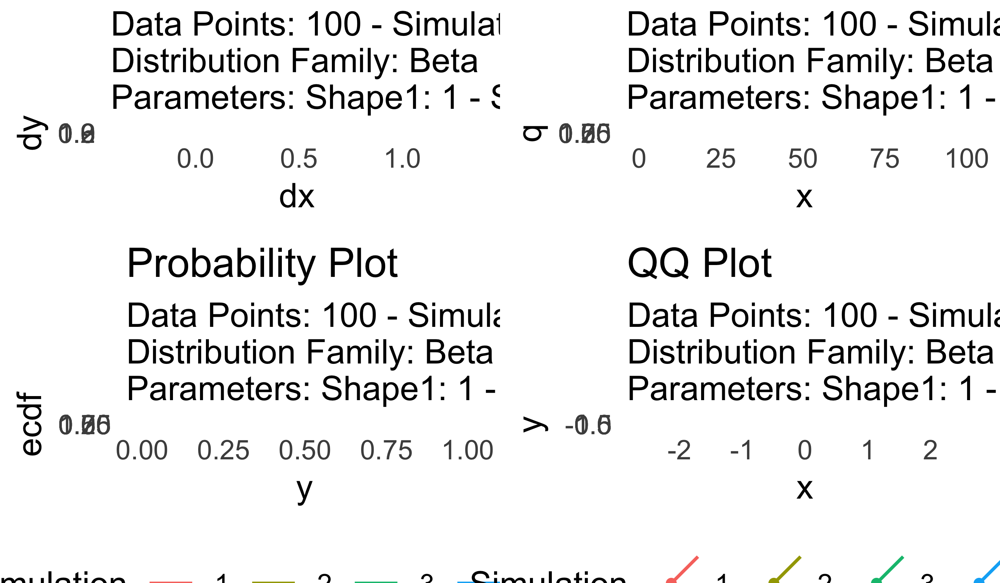
5 Finding one’s Data Distribution
Data belonging to a sample will never exactly follow a specific distribution, even when the test for normality says it does — there will always be a small probability that they are non-normal, is in fact better described by some other distribution. In other words and data are only compatible with a certain distribution, and one can never answer the question “Does my data follow the distribution xy exactly?” as simply as providing a yes/no answer. So what now? How does one find one’s data distribution? We can use the Cullen, Frey graph function that lives in the fitdistrplus package. This graph tells us whether the skewness and kurtosis of our data are consistent with that of a particular distribution. We will demonstrate by generating various data distributions and testing them using the Cullen and Frey graph.
library(fitdistrplus)
library(logspline)
# Generate log-normal data
y <- c(37.50,46.79,48.30,46.04,43.40,39.25,38.49,49.51,40.38,36.98,40.00,
38.49,37.74,47.92,44.53,44.91,44.91,40.00,41.51,47.92,36.98,43.40,
42.26,41.89,38.87,43.02,39.25,40.38,42.64,36.98,44.15,44.91,43.40,
49.81,38.87,40.00,52.45,53.13,47.92,52.45,44.91,29.54,27.13,35.60,
45.34,43.37,54.15,42.77,42.88,44.26,27.14,39.31,24.80,16.62,30.30,
36.39,28.60,28.53,35.84,31.10,34.55,52.65,48.81,43.42,52.49,38.00,
38.65,34.54,37.70,38.11,43.05,29.95,32.48,24.63,35.33,41.34)
plot(x = c(1:length(y)), y = y)
hist(y)
descdist(y, discrete = FALSE, boot = 100)R> summary statistics
R> ------
R> min: 16.62 max: 54.15
R> median: 40.38
R> mean: 40.28434
R> estimated sd: 7.420034
R> estimated skewness: -0.551717
R> estimated kurtosis: 3.565162
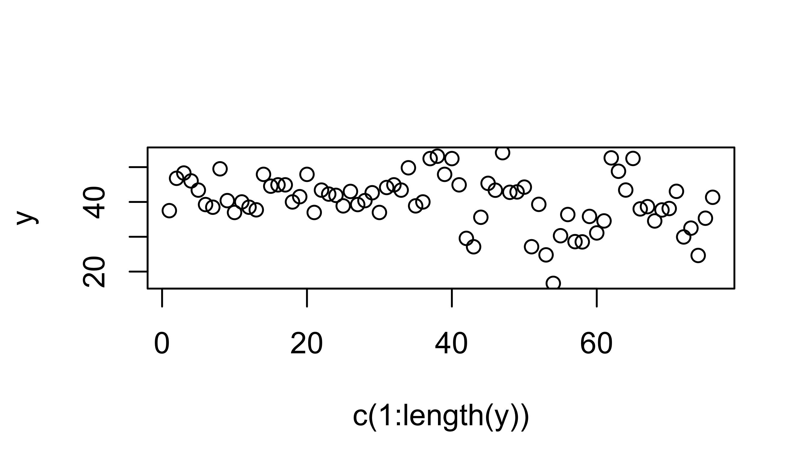
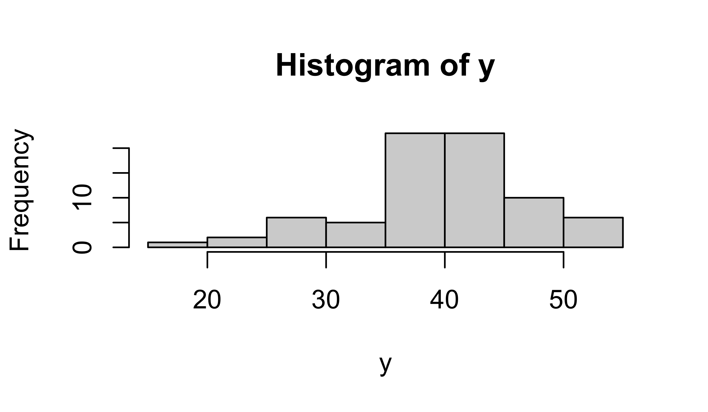
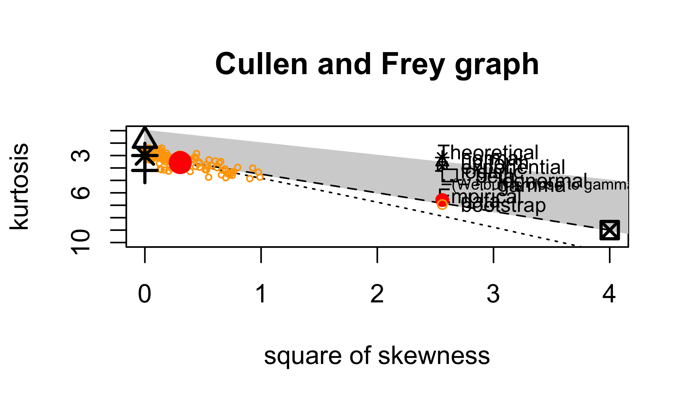
R> summary statistics
R> ------
R> min: 7.938211 max: 19.29328
R> median: 12.71336
R> mean: 12.89725
R> estimated sd: 2.265591
R> estimated skewness: 0.238176
R> estimated kurtosis: 2.868808
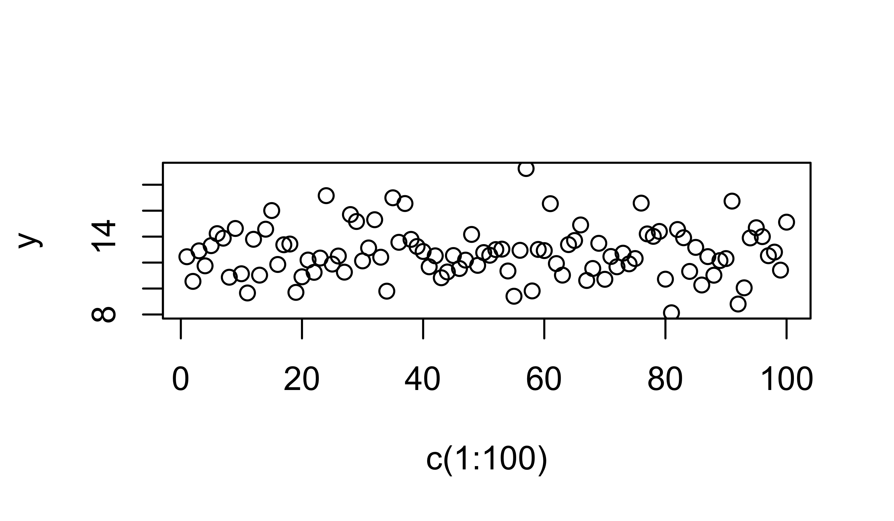
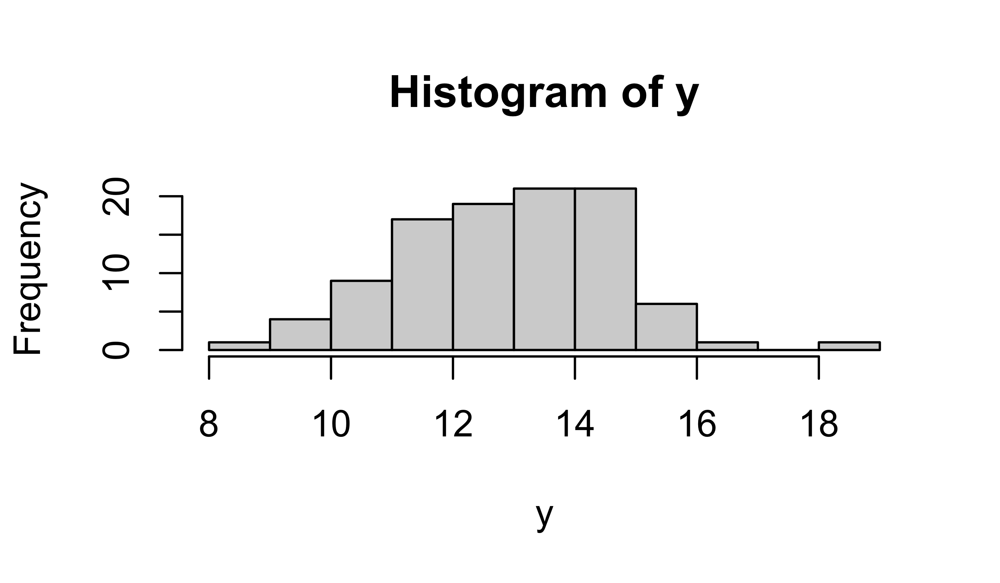
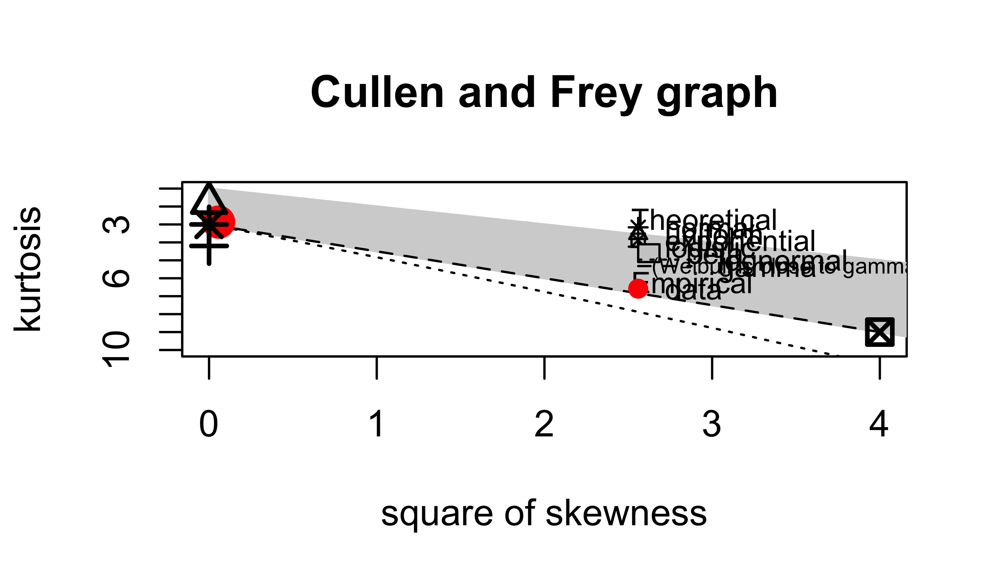
R> summary statistics
R> ------
R> min: 0.01032643 max: 0.9970243
R> median: 0.5360216
R> mean: 0.5239803
R> estimated sd: 0.2832578
R> estimated skewness: -0.0005382988
R> estimated kurtosis: 1.822495
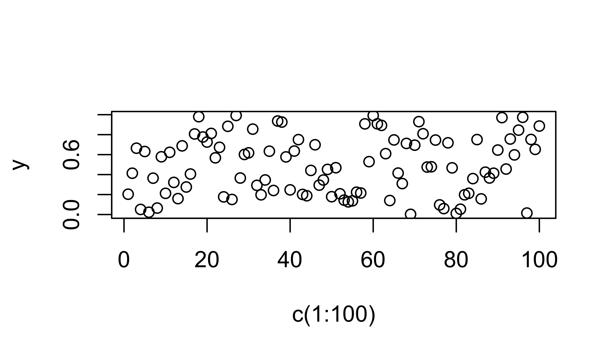
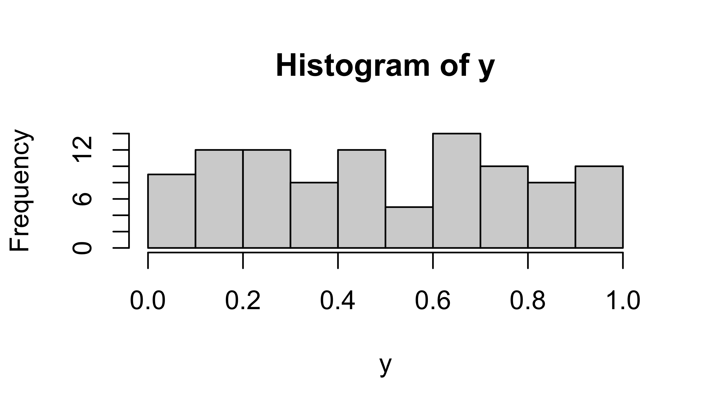
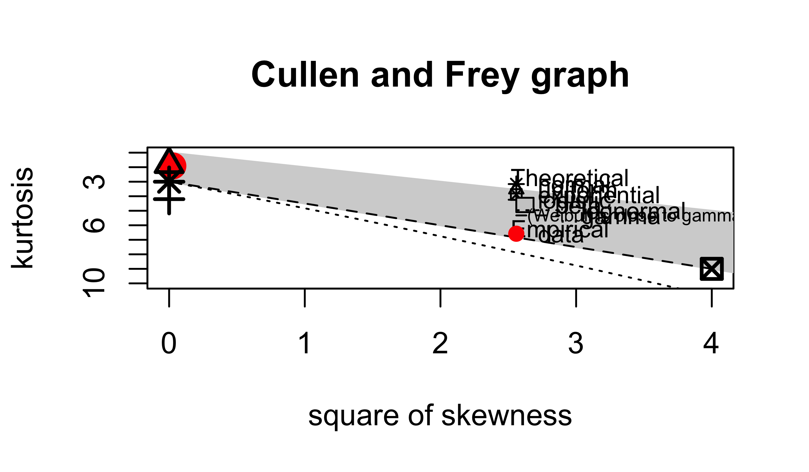
R> summary statistics
R> ------
R> min: 8.664809e-06 max: 5.383918
R> median: 1.191518
R> mean: 1.585786
R> estimated sd: 1.309643
R> estimated skewness: 0.8767544
R> estimated kurtosis: 3.02607
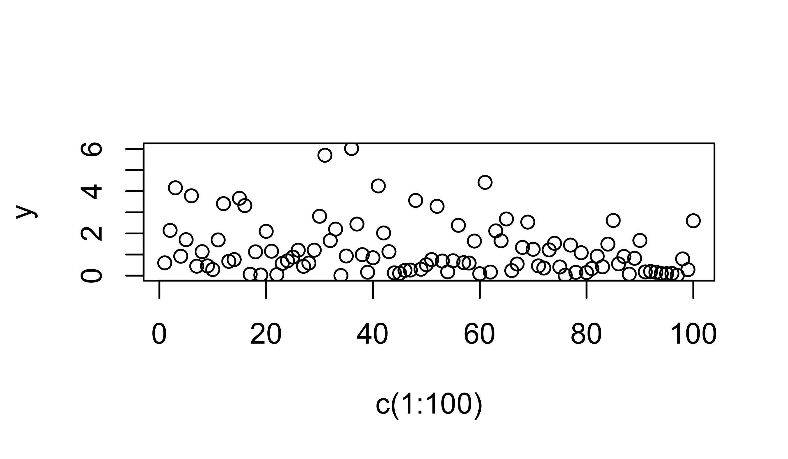
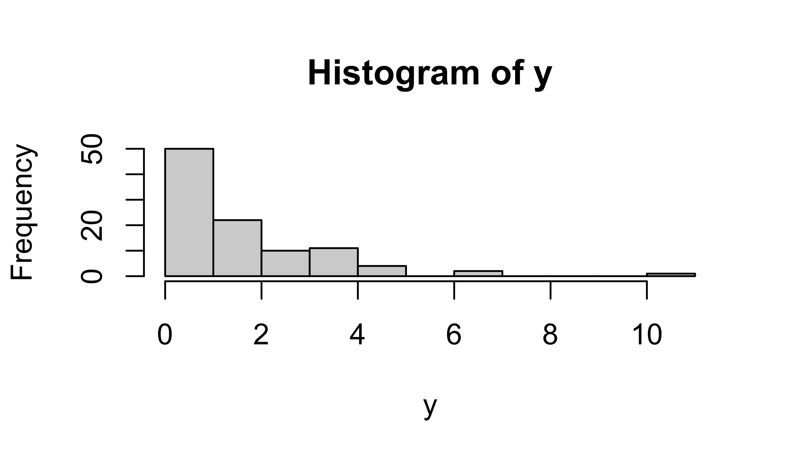
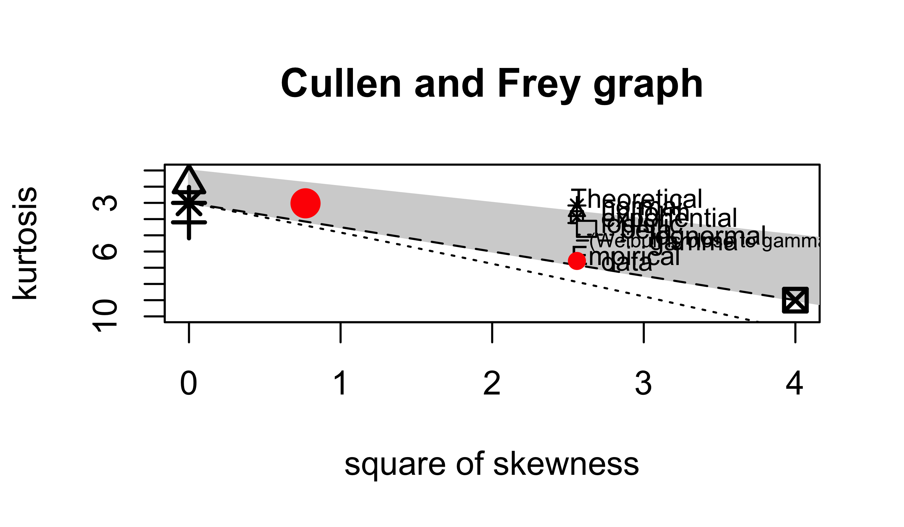
There is also a whole bunch of other approaches to use to try and identify the data distribution. Let us start with the gold standard first: normal data. We will demonstrate some visualisation approaches. The one that you already know is a basic histogram; it tells us something about the distribution’s skewness, the tails, the mode(s) of the data, outliers, etc. Histograms can be compared to shapes associated with idealistic (simulated) distributions, as we will do here.
y <-rnorm(n = 200, m = 13, sd = 2)
old_par <- par(mfrow = c(2, 2), mar = c(4, 4, 2, 1))
# using some basic base graphics as ggplot2 is overkill;
# we can get a histogram using hist() statement
hist(y, main = "Histogram of observed data")
plot(density(y), main = "Density estimate of data")
plot(ecdf(y), main = "Empirical cumulative distribution function")
# standardise the data
z.norm <- (y - mean(y)) / sd(y)
# make a qqplot
qqnorm(z.norm)
# add a 45-degree reference line
abline(0, 1)
par(old_par)
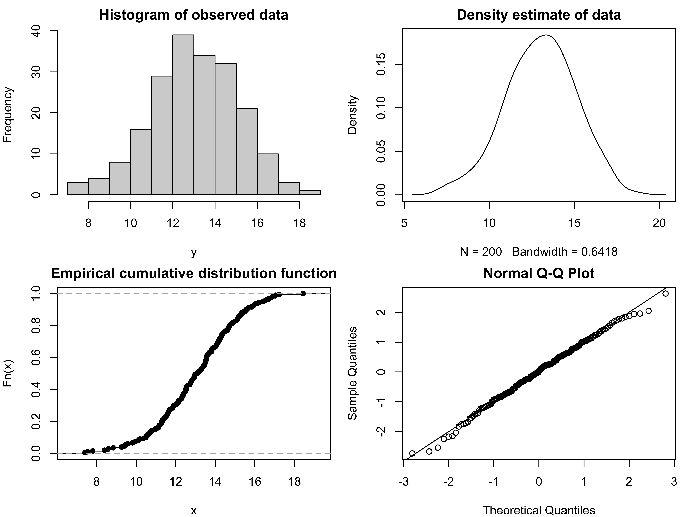
Above we have also added a diagonal line to the qqplot. If the sampled data come from the population with the chosen distribution, the points should fall approximately along this reference line. The greater the departure from this reference line, the greater the evidence for the conclusion that the data set have come from a population with a different distribution.
Citation
BibTeX citation:
@online{a._j.2021,
author = {A. J. , Smit},
title = {4. {Data} {Distributions}},
date = {2021-01-01},
url = {http://samos-r.netlify.app/basic_stats/04-distributions.html},
langid = {en}
}
For attribution, please cite this work as:
A. J. S (2021) 4. Data Distributions. http://samos-r.netlify.app/basic_stats/04-distributions.html.